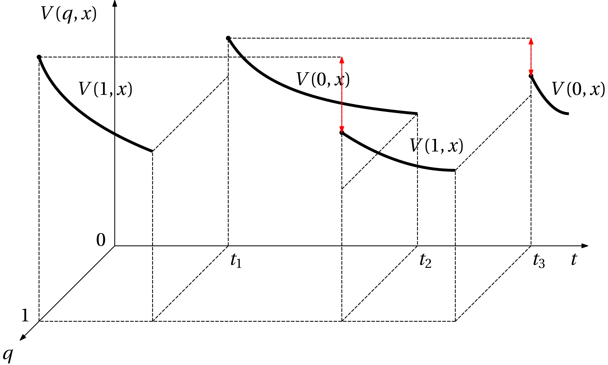
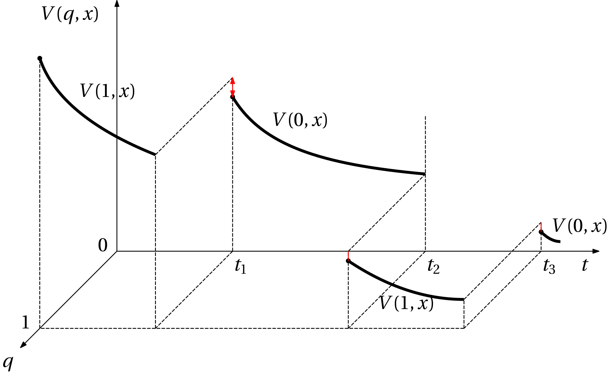

Stability via common Lyapunov function
Hybrid system stability analysis via Lyapunov(-like) function
V(q,x) smooth in x such that
V(q,0) = 0, \quad V(q,x) > 0 \; \text{for all nonzero} \; x,
\left(\nabla_x V(q,x)\right)^\top f(q,x) \leq 0
and

Stricter condition

Further restricted set of candidate functions: common Lyapunov function (CLF)
- Just a single Lyapunov function V(x) common for all discrete states (modes, locations) q.
- Implies that arbitrary switching is allowed.
- \rightarrow conservative.
- For switched systems, the analysis can be interpreted within the framework of differential inclusions \dot x \in \{f_1(x), f_2(x),\ldots,f_m(x)\}
(Global) uniform asymptotic stability
. . .
There exists V(q) such that
. . .
\boxed{\kappa_1(\|x\|) \leq V(x) \leq \kappa_2(\|x\|),}
- where \kappa_1(\cdot), \kappa_2(\cdot) are class \mathcal{K} comparison functions,
- global for \kappa_1(\cdot)\in\mathcal{K}_\infty,
. . .
and \boxed{\left(\nabla V(x)\right)^\top f_q(x) \leq -\rho(\|x\|),\quad q\in\mathcal{Q},} where \rho(\cdot) is a positive definite continuous function, zero at the origin.
. . .
Converse theorem for global uniform asymptotic stability (GUAS).
- Nice, a CLF exists for a GUAS system, but how do we find it?
- Restrict the set of candidate functions…
Common quadratic Lyapunov function (CQLF)
A single quadratic Lyapunov function V(x) = x^\top P x, where P=P^\top \succ 0.
In principle could be used for nonlinear systems, but let’s consider linear systems here.
Consider r continuous-time LTI systems parameterized by the system matrices A_i for i=1,\ldots, r as \dot x = A_i x(t).
Time derivatives of V(x) along the trajectory of the i-th system \dot V(x) = x^\top(A_i^\top P + PA_i)x,
which, upon introduction of new matrix variables Q_i=Q_i^\top given by
A_i^\top P + PA_i = Q_i,\qquad i=1,\ldots, ryields
\dot V(x) = x^\top Q_ix,from which it follows that all Q_i must satisfy
x^\top Q_i x \leq 0,\qquad i=1,\ldots, r
for (Lyapunov) stability and
x^\top Q_i x < 0,\qquad i=1,\ldots, r
for asymptotic stability.
A comment on the notation \dot V(x): how come that it can be given with several right hand sides, one for each Q_i? The answer is that perhaps the notation \dot V(x) does not reflect well that this time derivatives is evaluated along a particular solution.
Linear matrix inequality (LMI)
. . .
F(X) = F_0 + F_1XG_1 + F_2XG_2 + \ldots + F_kXG_k \succ 0, where the inequality reads “positive definite”.
- Feasibility LMI problem: does X=X^\top exist such that the LMI F(X)\succ 0 is satisfied?
CQLF as an LMI
\begin{aligned} P &\succ 0,\\ A_1^\top P + PA_1 &\prec 0,\\ A_2^\top P + PA_2 &\prec 0,\\ & \vdots \\ A_r^\top P + PA_r &\prec 0. \end{aligned}
Solving in Matlab using YALMIP or CVX
Most numerical solvers for semidefinite programs (SDP) can handle nonstrict inequalities.
Enforce strict inequality by \begin{aligned} P &\succeq \epsilon I,\\ A_1^\top P + PA_1 &\preceq \epsilon I,\\ A_2^\top P + PA_2 &\preceq \epsilon I,\\ & \vdots \\ A_r^\top P + PA_r &\preceq \epsilon I. \end{aligned}
For LMIs with no affine term, multiply them “arbitrarily” to get \begin{aligned} P &\succeq I,\\ A_1^\top P + PA_1 &\preceq I,\\ A_2^\top P + PA_2 &\preceq I,\\ & \vdots \\ A_r^\top P + PA_r &\preceq I. \end{aligned}
Solution set of an LMI is convex
and therefore if a solution P=P^\top \succ 0 exists such that \begin{aligned} A_1^\top P + PA_1 &\prec 0,\\ A_2^\top P + PA_2 &\prec 0,\\ & \vdots \\ A_r^\top P + PA_r &\prec 0, \end{aligned}
then P also solves the convex combination \left(\sum_{i=1}^r\alpha_i A_i\right)^\top P + P\left(\sum_{i=1}^r\alpha_i A_i\right) \prec 0, where \alpha_1, \alpha_2, \ldots, \alpha_r \geq 0 and \sum_i \alpha_i = 1.
That means that necessarily every convex combination of the systems must be stable.
- But it is only necessary, not sufficient.
Equivalently, we investigate stability of a linear differential inclusion \dot x \in \mathcal{F}(x), where \mathcal{F}(x) = \overline{\operatorname{co}}\{A_1x, A_2x, \ldots, A_rx\}.
What if quadratic LF is not enough?
Quadratic Lyapunov function is a (multivariate) polynomial \begin{aligned} V(x) &= x^\top P x\\ &= \begin{bmatrix}x_1 & x_2\end{bmatrix} \begin{bmatrix} p_{11} & p_{12}\\ p_{12} & p_{22}\end{bmatrix} \begin{bmatrix}x_1\\ x_2\end{bmatrix}\\ &= p_{11}x_1^2 + 2p_{12}x_1x_2 + p_{22}x_2 \end{aligned}
How about a polynomial of a higher degree?
But how do we enforce positive definiteness?
Positive/nonnegative polynomials
Is the polynomial p(\bm x), \; \bm x\in \mathbb R^n, positive (or nonnegative) on the whole \mathbb R^n? That is, we ask if p(\bm x) > 0,\quad \text{or}\quad p(\bm x) \geq 0\; \forall \bm x\in\mathbb R^n.
Example: p(\bm x)= 2x_1^4 + 2x_1^3x_2 - x_1^2x_2^2 + 5x_2^4\geq 0 for all x_1\in\mathbb R, x_2\in\mathbb R ?
Additionally, \bm x can be restricted to some \mathcal X\sub \mathbb R^n and we ask if
p(\bm x) \geq 0 \;\forall\; \bm x\in \mathcal X.Semialgebraic sets \mathcal X are often considered. These are defined by polynomial inequalities such as g_j(\bm x) \geq 0, \; j=1,\ldots, m.
How can we check nonnegativity of polynomials?
Gridding is not the way to go – we need conditions on the coefficients of the polynomial so that we can do some optimization later.
Example: Consider a univariate polynomial p(x) = x^4 - 4x^3 + 13x^2 - 18x + 17. Does it hold that p(x)\geq 0 \; \forall x\in \mathbb R ?
What if we learn that the polynomial can be written as p = (x-1)^2 + (x^2 - 2x + 4)^2
Obviously, whatever the two squared polynomials are, after squaring they become nonnegative. And summing nonnegative numbers yields a nonnegative result. Let’s generalized this.
Sum of squares (SOS) polynomials
- If we can express the polynomial as a sum of squares of some other polynomials, the original polynomial is nonnegative
. . .
\boxed{p(\bm x) = \sum_{i=1}^k p_i(\bm x)^2\; \Rightarrow \; p(\bm x) \geq 0,\; \forall \bm x\in \mathbb R^n.}
But the converse does not hold in general – not every nonnegative polynomial is SOS!
There are only three cases, for which SOS is a necessary and sufficient condition of nonnegativeness.
- n=1: univariate polynomials. The degree (the highest power) d can be arbitrarily high (but even, obviously).
- d = 2 and n is arbitrary: multivariate polynomials of degree two. Example, d=3 for p(\bm x) = x_1^2 + x_1x_2^2.
- n=2 and d = 4: bivariate polynomials of degree 4 (at maximum).
For all other cases all we can say is that \mathrm{SOS} \Rightarrow p(\bm x)\geq 0.
Hilbert conjectured in 1900 in the 17th problem that every nonnegative polynomial can be written as a sum of squares of rational functions. This was later proved correct. It turns out, that this fact is not as useful as the SOS using polynomials because of impossibility to state apriori the bounds on the degrees of the polynomials defining those rational functions.
How to get an SOS representation of a polynomial (or prove that none exist)?
Back to the univariate example first.
One of the two squared polynomials is x^2 - 2x + 4.
We can write it as x^2 - 2x + 4 = \underbrace{\begin{bmatrix}4 & -2 & 1\end{bmatrix}}_{\bm v^\top} \underbrace{\begin{bmatrix} 1 \\ x \\ x^2\end{bmatrix}}_{\bm z}.
Then the squared polynomial can be written as (x^2 - 2x + 4)^2 = \bm z^\top \bm v \bm v^\top \bm z.
Note that the the product \bm v \bm v^\top is a positive semidefinite matrix of rank one.
We can similarly express the second squared polynomial x-1 = \underbrace{\begin{bmatrix} -1 & 1 & 0\end{bmatrix}}_{\bm v^\top} \underbrace{\begin{bmatrix} 1 \\ x \\ x^2\end{bmatrix}}_{\bm z} and then (x - 1)^2 = \bm z^\top \begin{bmatrix} -1 \\ 1 \\ 0\end{bmatrix} \begin{bmatrix} -1 & 1 & 0\end{bmatrix} \bm z.
Summing the two squares we get the original polynomial. But while doing this, we can sum the two rank-one matrices. \begin{aligned} p(x) &= x^4 - 4x^3 + 13x^2 - 18x + 17\\ &= \begin{bmatrix} 1 & x & x^2\end{bmatrix} \bm P \begin{bmatrix} 1 \\ x \\ x^2\end{bmatrix} \end{aligned}, where \bm P\succeq 0 is \bm P = \begin{bmatrix} 4 \\ -2 \\ 1\end{bmatrix} \begin{bmatrix} 4 & -2 & 1\end{bmatrix} + \begin{bmatrix} -1 \\ 1 \\ 0\end{bmatrix} \begin{bmatrix} -1 & 1 & 0\end{bmatrix}
The matrix that defines the quadratic form is positive semidefinite and of rank 2.
- The rank of the matrix is given by the number of squared terms in the SOS decomposition.
In a general multivariate case we can proceed similarly. Just form the vector \bm z from all possible monomials: z = \begin{bmatrix}1 \\ x_1 \\ x_2 \\ \\ \vdots \\ x_n\\ x_1^2 \\ x_1 x_2 \\ \vdots \\ x_n^2\\\vdots \\x_1x_2\ldots x_n^{2}\\ \vdots \\ x_n^d \end{bmatrix}
But how to determine the coefficients of the matrix?
Example: p(x_1,x_2)=2x_1^4 +2x_1^3x_2 − x_1^2x_2^2 +5x_2^4.
Define the vector \bm z as \bm z = \begin{bmatrix} x_1^2 \\ x_1x_2 \\ x_2^2\end{bmatrix}
Then it must be possible to write the polynomial as \begin{aligned} p(x_1,x_2)&=\begin{bmatrix} x_1^2 \\ x_1x_2 \\ x_2^2\end{bmatrix}^\top \begin{bmatrix} p_{11} & p_{12} & p_{13}\\ p_{12} & p_{22} & p_{23}\\p_{13} & p_{23} & p_{33}\end{bmatrix} \begin{bmatrix} x_1^2 \\ x_1x_2 \\ x_2^2\end{bmatrix}\\ &= p_{11}x_1^4 + p_{33}x_2^4 \\ &\quad + 2p_{12}x_1^3x_2 + 2p_{23}x_1x_2^3\\ &\quad + (2p_{13} + p_{22})x_1^2x_2^2 \end{aligned}
This only gives 5 equations.
The sixth is the LMI condition P\succeq 0.
Searching for a positive polynomial Lyapunov function
. . .
V(x) \quad \text{is SOS}
. . .
Ooops, V(s) must be positive and not just nonnegative:
. . .
\boxed{ V(s) - \phi(x) \quad \text{is SOS},} where \phi(x) = \gamma \sum_{i=1}^n\sum_{j=1}^{d} x_i^{2j} for some \gamma > 0.
. . .
\boxed {\left(\nabla V(x)\right)^\top f(x)\quad \text{is SOS}}
Solving SOS problems
- Matlab: SOSTOOLS, …
- Julia: SumOfSquares.jl